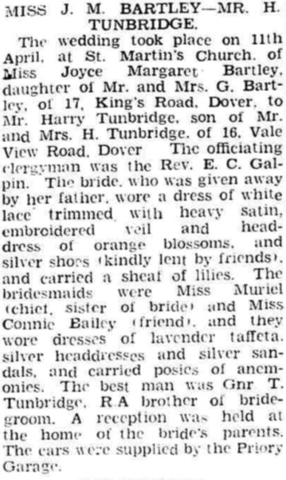

Harry Tunbridge 1920 - 1996
[ Home ] | [ Calendar ] | [ Surnames Index ] | [ Family History ]The son of Harry Tunbridge (a ticket collector) and Mary Alexander, Harry Tunbridge, the second cousin once-removed on the father's side of <a href="I1.html">Nigel Horne</a>, was born in Dover, Kent, England on Mar 31, 1920<span class="citation">1,2</span>. He married Joyce Bartley on St Martin's Church, 45 Church Road in Dover on Apr 11, 1942<span class="citation">3</span>. On Jun 19, 1921, he lived on 31 Church Road in Dover<span class="citation">4</span>. <p>He died on Jun 2, 1996 in Canterbury, Kent, England<span class="citation">2</span>.
Parents
- Harry was born on Feb 17, 1876
- Mary Norquay was born on Jul 30, 1891
Citations
- England & Wales births 1837-2006 - Findmypast
- England & Wales deaths 1837-2007 - Findmypast
- England & Wales Marriages 1837-2005 - Findmypast
- 1921 Census Of England & Wales - Findmypast (was age 1 and the son of the head of the household)
Media
Dover Express - 17 Apr 1942

England & Wales births 1837-2006 - BMD/B/1920/2/AZ/001733/098
England & Wales deaths 1837-2007 - BMD/D/1996/6/81675403
England & Wales marriages 1837-2005 - BMD/M/1942/2/AZ/001466/034
1921 Census of England & Wales - GBC/1921/RG15/04534/0079/05
Family Tree

Generated by Ged2Site. Last updated on Jul 20, 2025